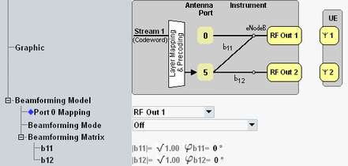

This section describes the node "Beamforming Model" for transmission mode 7.

Selects the mapping of antenna port 0 to the RF output paths. This setting is available for TM 7 in scenarios with two RF output paths, without fading.
You can map port 0 to the first RF output path only. Or you can map it to both output paths.
Remote command:Enables or disables beamforming.
"Off" | Beamforming is disabled. |
"On" | Beamforming is enabled. The configured beamforming matrix is used. |
"TS 36.521 Beamforming Mode" | Beamforming is enabled. The beamforming matrix is selected randomly as defined in 3GPP TS 36.521, annex B.4.1 and B.4.2. Not allowed for 1x1 beamforming matrices and for "Follow..." scheduling types. |
"Precoding Matrix" | Not allowed for TM 7 |
This section defines the beamforming matrix for the beamforming mode "On".
The matrix characterizes the mapping of the UE-specific antenna port 5 to the transmit antennas, see "Beamforming Matrix".
Each element of the matrix is a complex number, defined via its phase and its magnitude. The size of the matrix is dynamic:
- 1x1 matrix (b11) for scenarios with one RF output path
You can configure the phase of the coefficient. - 1x2 matrix (b11 and b21) for scenarios with two RF output paths.
You can configure the phase of both coefficients.